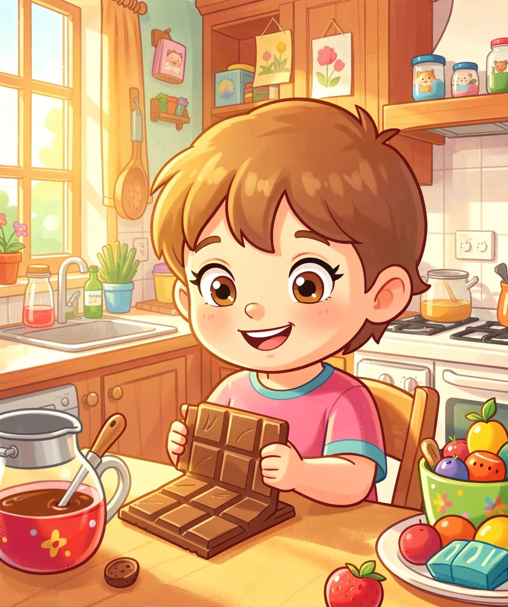
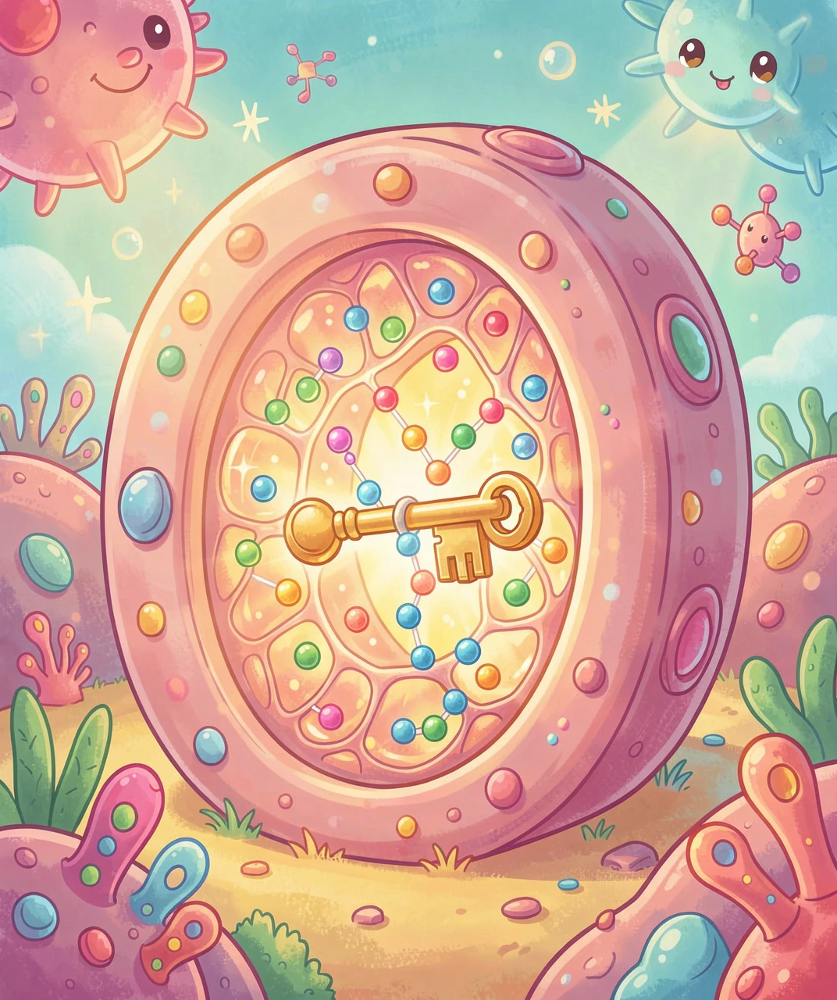
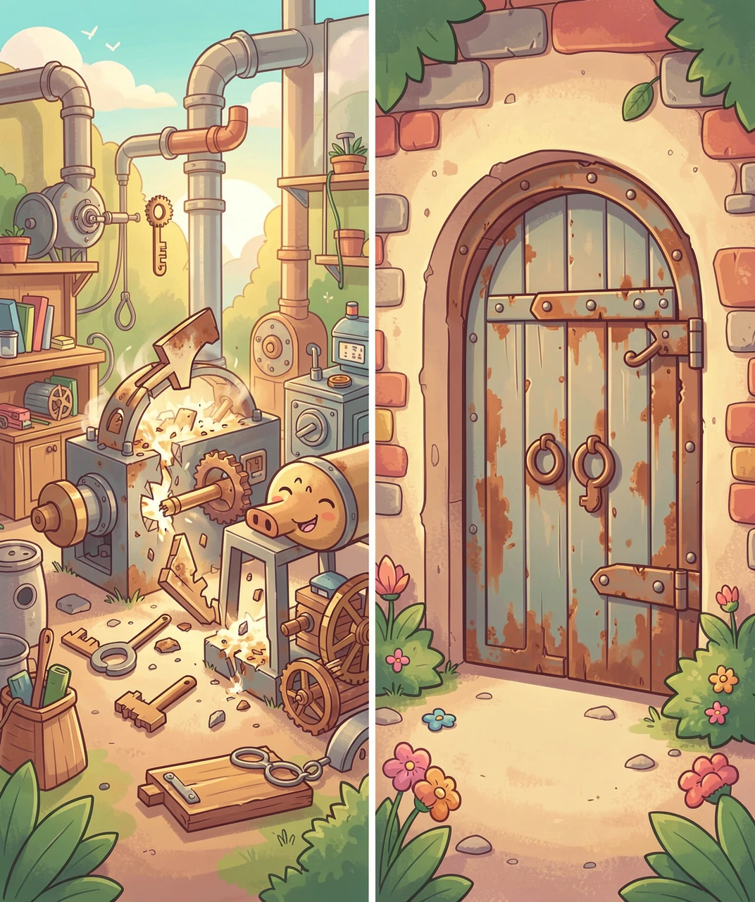
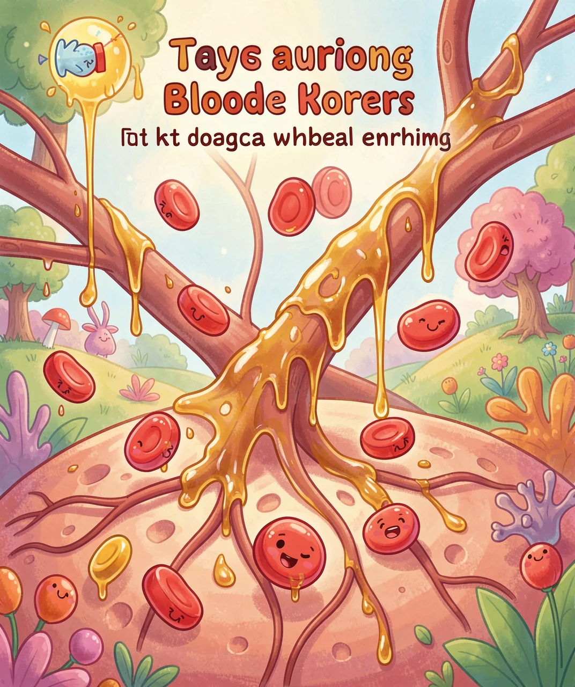
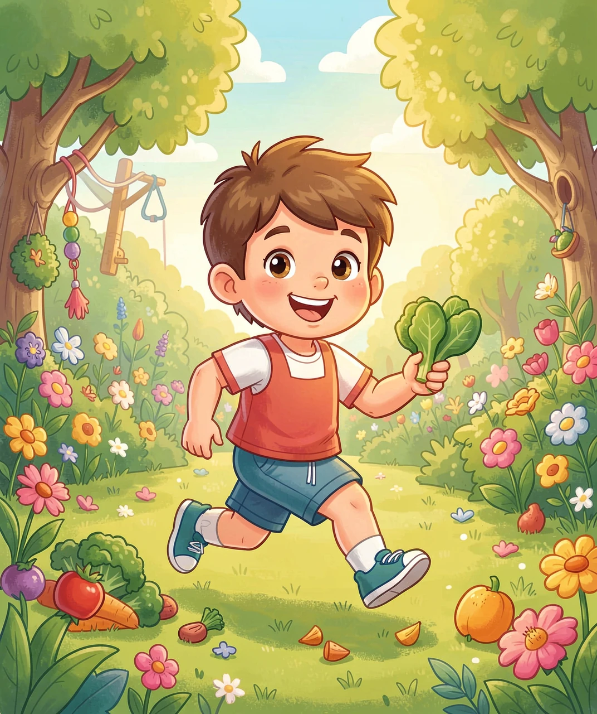

用第一性原理，看懂身体里的甜蜜危机
午饭后，同桌的小明从书包里掏出一块巧克力，刚要咬下去，老师笑着拦住他：「小明要少吃点甜的哦。」你可能会想：糖不就是甜甜的味道吗？为什么对有些人来说，吃糖会变成一件「危险」的事？要回答这个问题，我们得先弄明白一件事——糖进了肚子之后，到底去了哪里？
我们每天吃下的米饭、面条、馒头，甚至那块巧克力，身体都会把它们拆成一种最小的「糖粒」，叫做葡萄糖。葡萄糖会钻进血液里，跟着血流跑遍全身。医学上把血液里的葡萄糖叫作「血糖」。所以「血糖高」并不是说你血液变甜了，而是说血液里漂浮的葡萄糖太多了。那葡萄糖多一点儿，又怎么会变成病呢？我们得先知道：身体到底为什么需要糖。
你的大脑是个「吃糖大王」！它只占你体重的约 2%，却要吃掉全身大约 20% 的葡萄糖。没有糖，脑子就没法好好思考——所以饿肚子时你会觉得头晕、注意力不集中。

葡萄糖对身体的用处，就像汽油对汽车。汽车的发动机烧汽油才能跑，身体的每一个细胞也要「烧」葡萄糖，才能让你心跳、走路、长高、思考。问题来了：血液把葡萄糖运到了细胞门口，可葡萄糖能自己溜进细胞里吗？答案很意外——不能。
细胞的表面裹着一层薄膜，像一堵带锁的门。葡萄糖分子太大，门锁又只认特定的「钥匙」，所以它站在门外进不去。那身体怎么把糖送进门呢？这里藏着一个关键角色——胰岛素。胰岛素是身体派发的「钥匙」，由肚子里一个叫胰腺的器官制造。当我们吃饭、血糖升高时，胰腺就赶紧放出胰岛素这把钥匙，插进细胞膜上的锁，门一开，葡萄糖才哗啦一下涌进细胞，被烧掉变成能量。这就是「血糖为什么会降下来」的底层原因：不是糖消失了，而是钥匙开门，把糖请进了细胞。
血液里的糖其实非常「淡」。健康人的血糖浓度大约只有 0.1%，比你喝一口可乐淡得多！所以你舔一下手指并不会觉得甜——糖都乖乖待在血液里，等着胰岛素这把钥匙来开门。

现在我们把逻辑串起来：吃饭 → 血糖升高 → 胰腺放胰岛素钥匙 → 门开、糖进细胞 → 血糖回落。糖尿病，说到底就是这条链路的某一环断了，导致葡萄糖一直堵在血液里出不去，血糖越积越高。那到底是哪一环断了？这里要往下再挖一层——糖尿病其实分两种，毛病出在完全不同的地方。
第一种（1型）：身体生产钥匙的「工厂」被自己人误伤了。胰腺里负责造胰岛素的细胞叫 β 细胞，可有些人的免疫系统（本来是打病菌的卫兵）认错了人，把 β 细胞当成敌人消灭掉。工厂没了，钥匙就彻底停产，葡萄糖永远进不了门。这往往从小就会发病，病人必须每天从外面补充胰岛素。第二种（2型）：钥匙还在生产，可门出问题了——细胞对胰岛素「听而不闻」，好像锁锈住了，钥匙插进去门也不开。于是胰腺只好拼命多造钥匙，可门越关越紧，血里的糖越堆越多。这种最常见，常和吃太多甜食、不运动有关。你看，同样是「血糖高」，根子却一个在工厂、一个在门——这才叫追到了根上。
胰岛素是历史上第一个被人工合成的人体蛋白质药物。1978 年，科学家让细菌当「小工厂」生产出人胰岛素，糖尿病人从此不用再从猪牛身上提取，能安全稳定地补充钥匙了。

葡萄糖本是好东西，可一旦长期堵在血液里出不去，就会从「燃料」变成「捣蛋鬼」。我们继续追问：为什么高血糖会伤人？因为血液流经全身每一个角落，过高的糖会悄悄「粘」在血管壁上，像糖浆糊住水管，让血管变脆、变窄。肾脏、眼睛里那些细细的血管最先遭殃，所以糖尿病久了可能伤肾、伤眼睛。
还有一个奇怪的现象：糖尿病人老是口渴、老想上厕所。这也要用第一性原理想——血液里糖太多，肾脏想把它排出去，就拉着大量水分一起变成尿，于是尿量变多；身体缺水，人就拼命喝水。这就像用糖水浇花，花盆（膀胱）总满着。另外，糖进不了细胞，细胞饿得发慌，人就会莫名变瘦、没力气。所以糖尿病的核心麻烦不是「甜」，而是「糖送不进细胞，还赖在血里搞破坏」。
把血液想成一条公路，葡萄糖是货车。糖尿病就是「卸货码头（细胞门）关闭」，货车全堵在路上（血糖高），而仓库（细胞）却空着挨饿。治糖尿病，本质是想办法重新打开码头。

追到根上，解决方案也就清楚了：既然问题是「门开不了」或「钥匙不够」，那我们就帮身体把门打开、把钥匙补上。对 2 型糖尿病，运动是最天然的「除锈剂」——肌肉一动起来，就会主动把葡萄糖「吸」进细胞，等于绕开门锁也能卸货，细胞门也会慢慢变灵敏。所以多跑跳、少久坐，就是在帮身体的糖交通疏通。
饮食上，少吃精制糖（汽水、糖果），多吃粗粮蔬菜，能让血糖像平缓的小溪而不是暴涨的洪水，胰腺就不用拼命造钥匙。已经得病的人，医生会用药物或打针补充胰岛素这把钥匙。更有趣的是未来：科学家正在做「人工胰腺」——一个小传感器实时测血糖，自动指挥泵放出刚好的胰岛素，像给身体装了「自动驾驶」，再也不用猜该打多少。从一把小小的钥匙，我们一路追到了细胞、血管、免疫和未来的机器人医院——这就是刨根问底的好处。
也许有一天，糖尿病人手腕上戴一个小贴片，它自己读懂身体的糖信号，悄悄放出刚刚好的钥匙。到时候，「管住嘴、迈开腿」加上聪明的机器，甜蜜就不再是危机。
